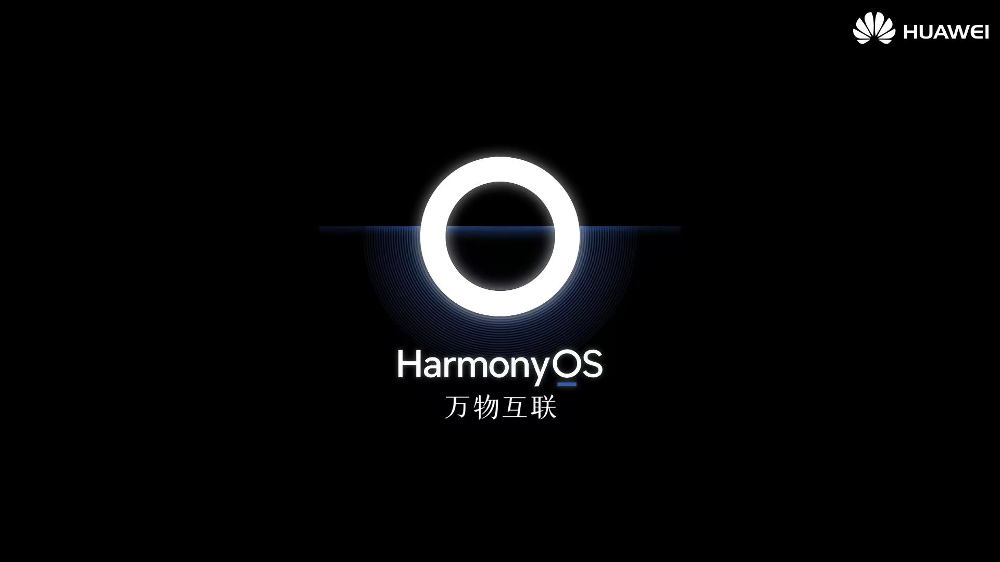
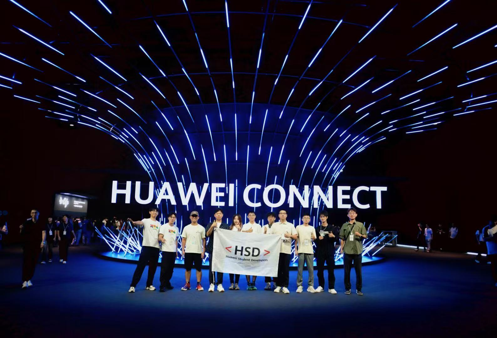
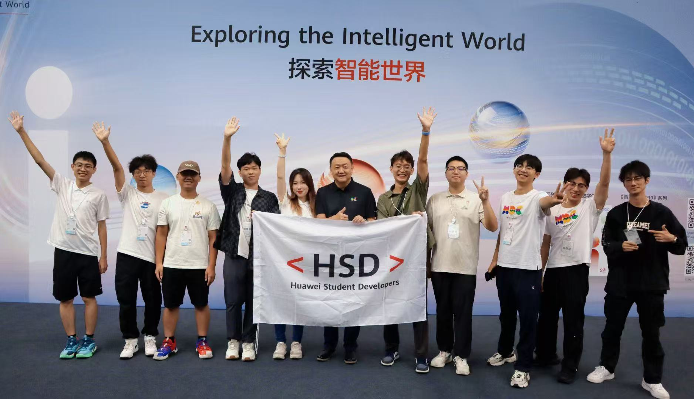
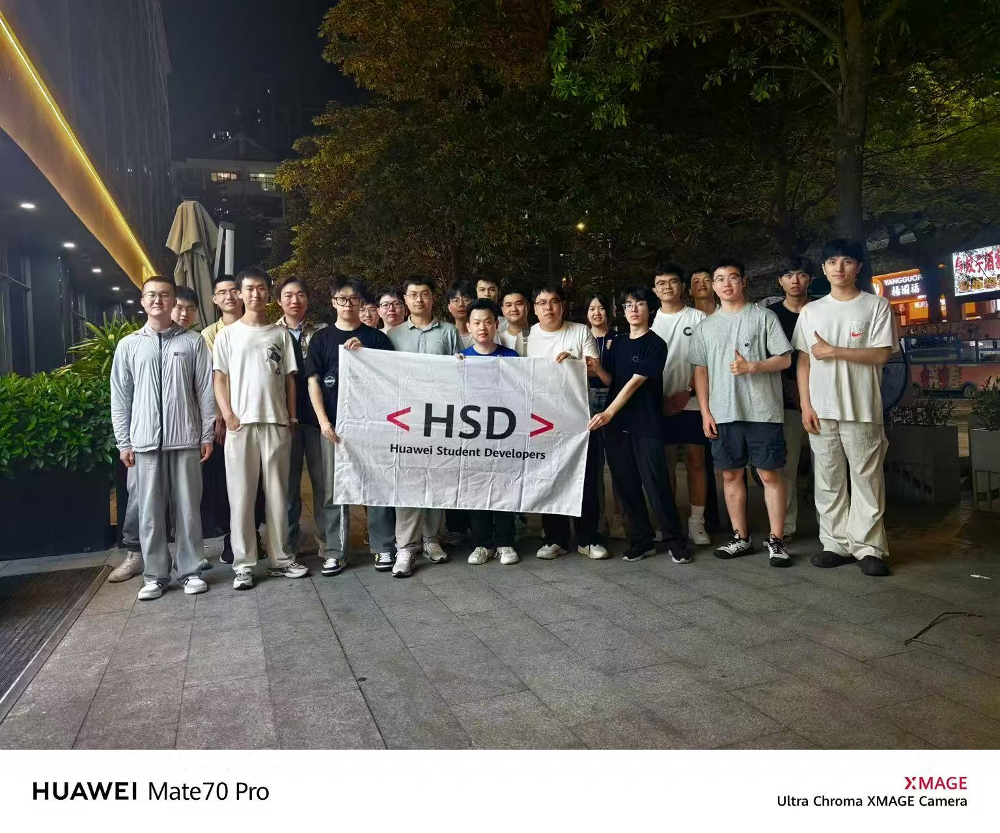
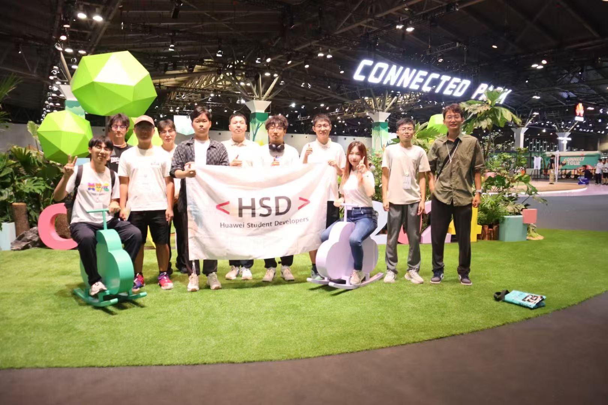
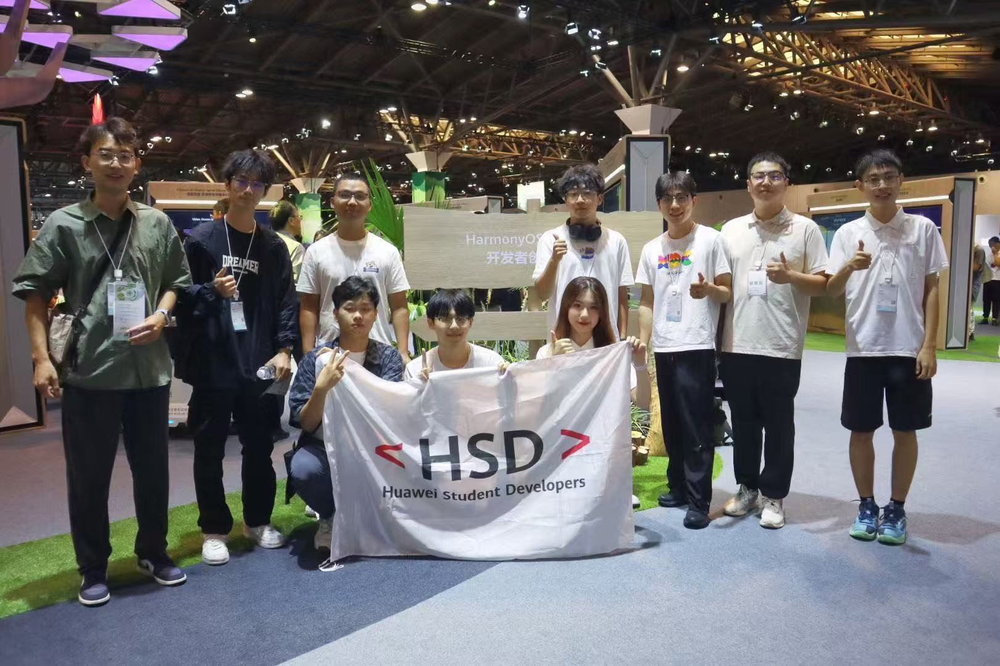
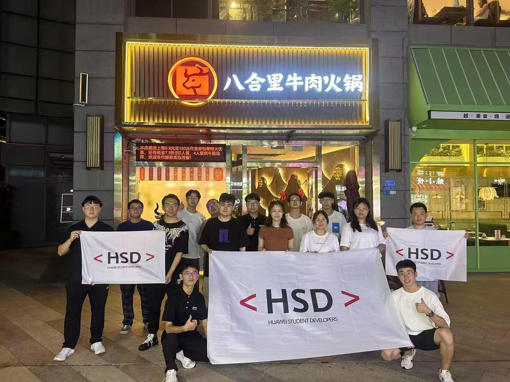
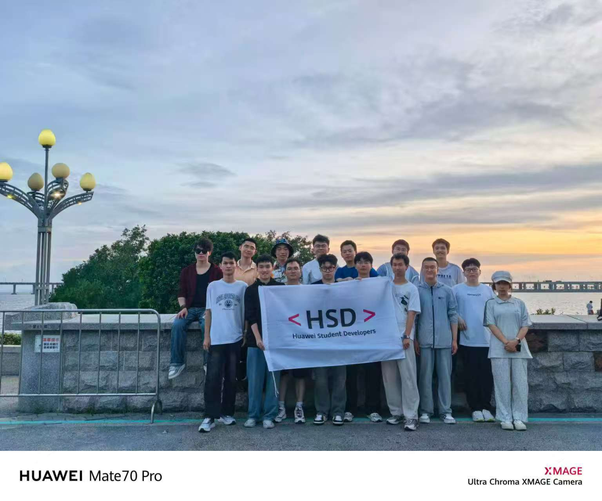
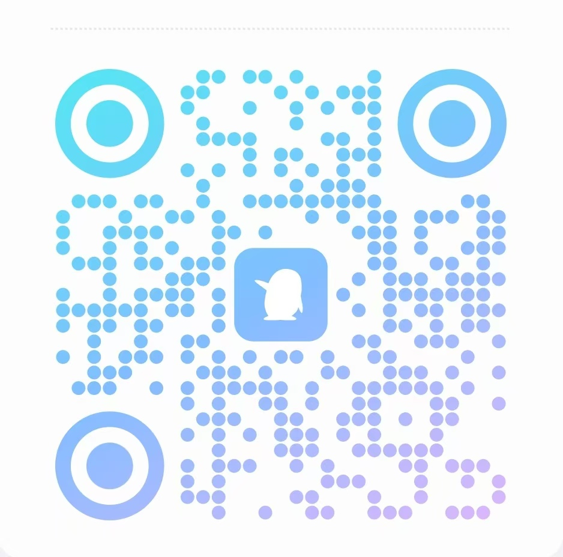

华为HSD（Huawei Student Developers）校园组织是华为公司面向高校学子打造的高规格人才发展计划， 旨在发掘和培养具有创新意识和技术领导力的青年学生。入选者将获得华为提供的独家技术培训、项目实践机会和行业资源支持， 这种经历含金量高、竞争力强，是广大学生群体向往的高层次成长平台。
抢先体验鸿蒙OS最新功能，参与开发者内测，与华为技术大咖面对面交流。
参与各种实践项目，将理论知识运用到实际中，真正提升自己的能力。
与全国高校开发者交流互动，共同探讨技术发展方向，构建强大的开发者社区。







成为HSD成员，你将获得以下专属福利和发展机会
表现优秀的成员将有机会获得华为校园招聘绿色通道，为你的职业发展打下坚实基础。
定期邀请华为技术专家和行业大咖，带来前沿技术课程和精彩讲座，了解最新技术趋势。
与来自不同专业、不同背景的优秀校园极客精英一起学习、交流、合作，拓宽人脉网络。
参与活动和项目，表现出色的同学将有机会获得荣誉证书与丰厚奖励，为简历增添闪光点。
参与华为相关的实践项目，运用所学知识解决实际问题，有机会将你的创意变成现实产品。
获得专属培训课程、限量开发套件、活动基金支持，甚至有机会直通华为实习通道。
无论你的年级专业如何，只要你对未来有热情，都欢迎加入我们
热爱技术学习，创新探索和技术交流，具备一定的技术能力或项目经验。
有发声传播能力，掌握宣传技能，熟悉推广策划，具备校园活动经历。
最新最潮的互联网达人、数码爱好者，具备较强的体验能力与表达能力。
无需担心技术门槛！HSD专注校园开发者培养，为认同华为的你提供成长机会。
简单几步，即可加入HSD大家庭
加入QQ群，群备注"年级-专业-姓名-学号"。
访问华为开发者联盟官网完成HSD成员在线申请并提交简历。
我们将对收到的简历进行筛选，符合要求的同学将进入面试环节。
主要考察加入组织意向、创新思维、团队合作精神等
面试通过的同学将收到正式的入选offer，欢迎成为山东管理学院HSD的一员。后期颁发对应证书
扫码加入QQ群，等待后期面试
